06-会话技术
会话跟踪是web程序中常用的技术，常用的会话跟踪技术是Cookie 和Session。
会话跟踪技术
对于会话跟踪，首先要理解什么是会话，然后再去理解什么是会话跟踪：
会话：用户打开浏览器，访问web服务器的资源，会话建立，直到有一方断开连接，会话结束。在一次会话中可以包含多次请求和响应。
- 从浏览器发出请求到服务端响应数据给前端之后，一次会话（在浏览器和服务器之间）就被建立了；
- 会话被建立后，如果浏览器或服务端都没有被关闭，则会话就会持续建立着；
- 浏览器和服务器就可以继续使用该会话进行请求发送和响应，上述的整个过程就被称为会话。
会话跟踪：一种维护浏览器状态的方法，服务器需要识别多次请求是否来自于同一浏览器，以便在同一次会话的多次请求间共享数据。
- 服务器会收到多个请求，这多个请求可能来自多个浏览器；
- 服务器需要识别请求是否来自同一个浏览器，这个过程就是会话跟踪；
- 服务器识别浏览器后就可以在同一个会话中多次请求之间来共享数据。
多次请求间的数据共享：购物网站的购物车结算；页面展示用户登录信息（发送多次请求都显示信息）；网站登录的”记住我“功能；登录页面的验证码功能（声明验证码和点击登录也是两次请求，需要进行比对才能登陆成功）
但是目前的浏览器和服务器之间不支持数据共享：浏览器和服务器之间使用的是HTTP请求来进行数据传输，而HTTP协议是无状态的，每次浏览器向服务器请求时，服务器都会将该请求视为新的请求（HTTP协议设计成无状态的目的是让每次请求之间相互独立，互不影响），请求与请求之间独立后，就无法实现多次请求之间的数据共享。
会话跟踪分为客户端的会话跟踪和服务端的会话跟踪技术。
Cookie
Cookie的基本使用
Cookie是一种客户端会话技术，将数据保存到客户端，以后每次请求都携带Cookie数据进行访问。
Cookie的工作流程
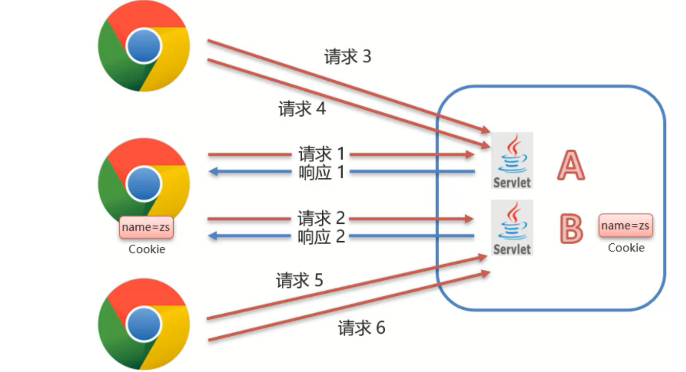- 服务端提供了两个Servlet，分别是ServletA和ServletB；
- 浏览器发送HTTP请求1给服务端，服务端ServletA接收请求并进行业务处理；
- 服务端ServletA在处理的过程中可以创建一个Cookie对象并将
name=zs的数据存入Cookie； - 服务端ServletA在响应数据的时候，会把Cookie对象响应给浏览器；
- 浏览器接收到响应数据，会把Cookie对象中的数据存储在浏览器内存中，此时浏览器和服务端就建立了一次会话；
- 在同一次会话中浏览器再次发送HTTP请求2给服务端ServletB，浏览器会携带Cookie对象中的所有数据；
- ServletB接收到请求和数据后，就可以获取到存储在Cookie对象中的数据，这样同一个会话中的多次请求之间就实现了数据共享。
Cookie的基本使用
1、发送Cookie
创建Cookie对象，并设置数据
1
Cookie cookie = new Cookie("key","value");
发送Cookie到客户端：使用response对象
1
response.addCookie(cookie);
通过Servlet向客户端发送一个Cookie：
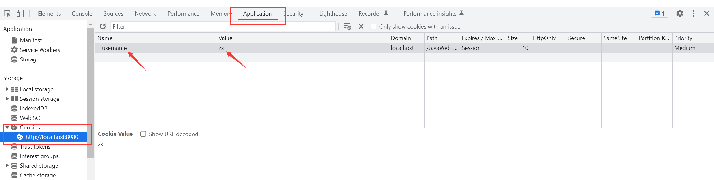
2、获取Cookie
获取客户端携带的所有Cookie，使用request对象
1
Cookie[] cookies = request.getCookies();
遍历数组获取每一个Cookie对象，使用Cookie对象方法获取数据
1
cookie.getName();
1
cookie.getValue();
在访问AServlet后关闭浏览器，重启浏览器后访问BServlet就无法获取到Cookie中的数据，因为重启浏览器之后就不是一次会话了。
Cookie原理分析
对于Cookie的实现原理是基于HTTP协议的，其中涉及到HTTP协议中的两个请求头信息：响应头 set-cookie、请求头 cookie
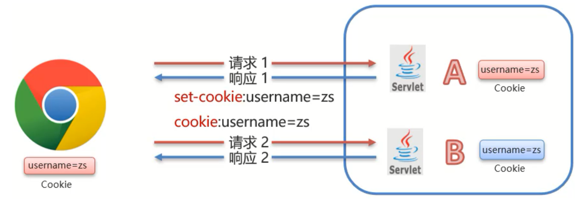- 对于AServlet响应数据的时候，Tomcat服务器都是基于HTTP协议来响应数据；当Tomcat发现后端要返回的是一个Cookie对象之后，Tomcat就会在响应头中添加一行数据
Set-Cookie:username=zs； - 浏览器获取到响应结果后，从响应头中就可以获取到
Set-Cookie对应值username=zs,并将数据存储在浏览器的内存中； - 浏览器再次发送请求给BServlet的时候，浏览器会自动在请求头中添加
Cookie: username=zs发送给服务端BServlet； - Request对象会把请求头中cookie对应的值封装成一个个Cookie对象，最终形成一个数组，BServlet通过Request对象获取Cookie。
可以验证一下：
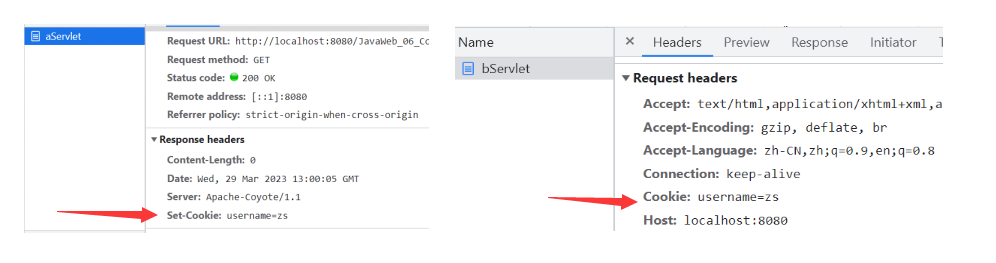
Cookie的使用细节
Cookie的存活时间
正像前面提到的，在访问AServlet后关闭浏览器，重启浏览器后访问BServlet就无法获取到Cookie中的数据。在默认情况下，Cookie存储在浏览器内存中，当浏览器关闭，内存释放，则Cookie被销毁。那么如何将Cookie持久化存储？
设置Cookie存活时间
1
setMaxAge(int seconds)
参数为：
- 正数：将Cookie写入浏览器所在电脑的硬盘，持久化存储，到时间自动删除；
- 负数：默认值，Cookie在当前浏览器内存中，当浏览器关闭，则Cookie被销毁；
- 0：删除对应Cookie。
Cookie存储中文
Cookie不能直接存储中文，当cookie里存储中文时访问服务器资源时会报错。所以我们可以用URL编解码的方式，在cookie中存字节数据。
Session
Session的基本使用
Session是一种服务端会话跟踪技术，将数据保存到服务端。
- Session是存储在服务端而Cookie是存储在客户端；
- 存储在客户端的数据容易被窃取和截获，存在很多不安全的因素存储在服务端的数据相比于客户端来说就更安全。
Session的工作流程
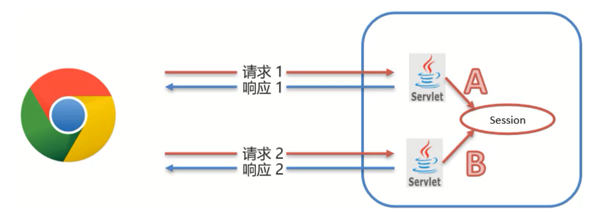- 在服务端的AServlet获取一个Session对象，把数据存入其中；
- 在服务端的BServlet获取到相同的Session对象（如何保证使用的是同一个Session对象），从中取出数据；
- 就可以实现一次会话中多次请求之间的数据共享了。
Session的基本使用
获取Session对象，使用的是request对象
1
HttpSession session = request.getSession();
Session对象提供的功能
存储数据到session域中
1
void setAttribute(String name, Object o)
根据 key，获取值
1
Object getAttribute(String name) // Session中是一个Object类型的数据，也就是说Session中可以存储任意数据类型
根据 key，删除该键值对
1
void removeAttribute(String name)
可以自己写个Servlet就能看到Session是能够在一次会话中两次请求之间共享数据的。
Session的原理分析
Session要想实现一次会话多次请求之间的数据共享，就必须要保证多次请求获取Session的对象是同一个；我们可以在Session 的两个Servlet中分别print出创建的Session对象：
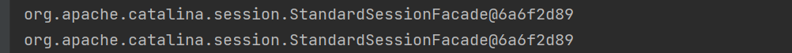
那么如果关闭浏览器再重新打开呢？这时候就不是同一个session对象了，所以Session实现的也是一次会话中多次请求之间的数据共享。
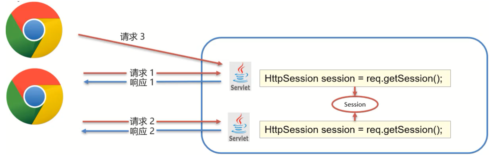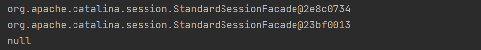
Session保证在一次会话中获取的Session对象是同一个（基于Cookie）
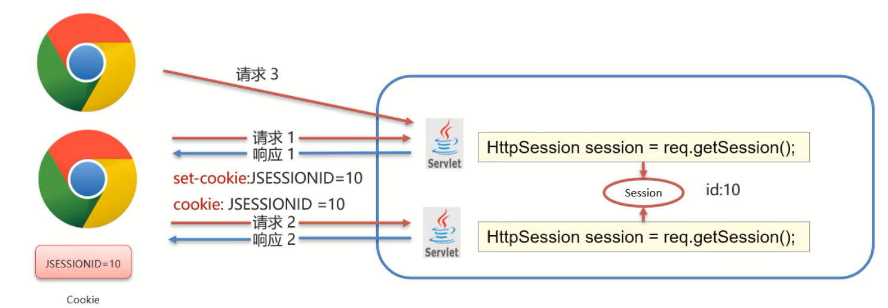
- demo1在第一次获取session对象的时候，session对象会有一个唯一的标识，假如是
id:10； - demo1在session中存入其他数据并处理完成所有业务后，需要通过Tomcat服务器响应结果给浏览器；
- Tomcat服务器发现业务处理中使用了session对象，就会把session的唯一标识
id:10当做一个cookie，添加Set-Cookie:JESSIONID=10到响应头中，并响应给浏览器； - 浏览器接收到响应结果后，会把响应头中的coookie数据存储到浏览器的内存中；
- 浏览器在同一会话中访问demo2的时候，会把cookie中的数据按照
Cookie: JESSIONID=10的格式添加到请求头中并发送给服务器Tomcat； - demo2获取到请求后，从请求头中就读取cookie中的JSESSIONID值为10，然后就会到服务器内存中寻找
id:10的session对象，如果找到了，就直接返回该对象，如果没有则新创建一个session对象； - 关闭打开浏览器后，因为浏览器的cookie已被销毁，所以就没有JESSIONID的数据，服务端获取到的session就是一个全新的session对象。
可以看一下在同一会话的两次请求中的Cookie数据：
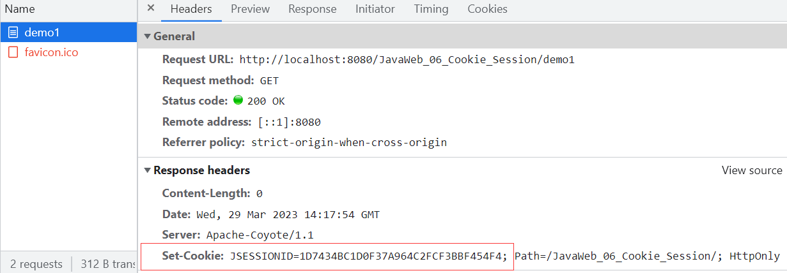

Session的使用细节
Session的钝化和活化
服务器端AServlet和BServlet共用的session对象应该是存储在服务器的内存中；当服务器重新启动后，内存中的数据应该是已经被释放，对象也应该都销毁了。但是对于session的数据，我们应该做到就算服务器重启了，也应该能把数据保存下来才对——服务器就是通过Session的钝化和活化做到的。
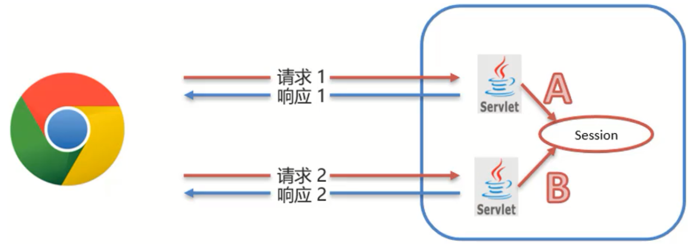- 钝化：在服务器正常关闭后，Tomcat会自动将Session数据写入硬盘的文件中
- 活化：再次启动服务器后，从文件中加载数据到Session中（数据加载到Session中后，路径中的文件会被删除掉）
小结：
- session数据存储在服务端，服务器重启后，session数据会被保存；
- 浏览器被关闭启动后，重新建立的连接就已经是一个全新的会话，获取的session数据也是一个新的对象；
- session的数据要想共享，浏览器不能关闭，所以session数据不能长期保存数据；cookie是存储在客户端，可以长期保存。
Session销毁
默认情况下，无操作，30分钟自动销毁；对于这个失效时间，是可以通过在
web.xml配置进行修改的。1
<session-config>
1
<session-timeout>100</session-timeout> <!-- 单位是mins -->
1
</session-config>
调用Session对象的
invalidate()进行销毁
Cookie和Session小结
Cookie 和 Session 都是来完成一次会话内多次请求间的数据共享。
- 区别：
- 存储位置：Cookie 是将数据存储在客户端，Session 将数据存储在服务端；
- 安全性：Cookie不安全，Session安全；
- 数据大小：Cookie最大3KB，Session无大小限制；
- 存储时间：Cookie可以通过setMaxAge()长期存储，Session默认30分钟；
- 服务器性能：Cookie不占服务器资源，Session占用服务器资源；
- 应用场景（不绝对）：
- 购物车：使用Cookie来存储；
- 以登录用户的名称展示：使用Session来存储；
- 记住我功能：使用Cookie来存储；
- 验证码：使用Session来存储；
会话跟踪在登陆注册中的应用
登录功能
登录功能做完了，很无语…本来几分钟就能搞定的事花了俩小时，一直识别不到xml映射文件，我反复检查namespace和核心配置文件无果，偶然发现我竟然将mapper下的xml映射文件放在了webapp目录而不是resource目录……欲哭无泪……
登录功能的业务逻辑是：在登录时（第一次请求）将用户数据存入session中，并进行数据共享到登陆成功页面以及其他页面（第二次请求）。由于是一次会话的多次请求，所以共享session中的数据不能用请求转发只能用重定向，这里值得注意一下。
”记住我“功能
在服务器端创建Cookie对象分别存储username和password，add到客户端，这时候可以看到response的响应头中存在Set-Cookie：
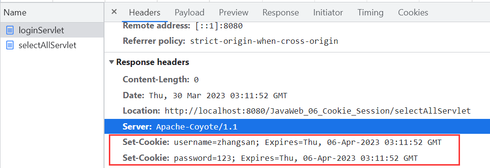
下一步是在客户端页面获取Cookie，将数据设置到登陆页面的用户名和密码框中。在页面可以使用EL表达式获取Cookie：
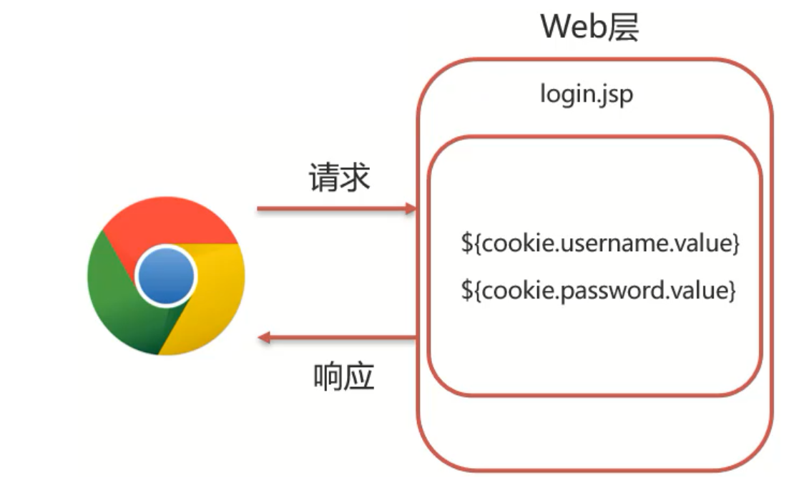在jsp页面中修改代码：
1 | <p>Username:<input id="username" name="username" value="${cookie.username.value}" type="text"></p> |
用户注册功能
业务逻辑是：前端通过表单将注册的用户名和密码传给RegisterServlet，调用Service层register，如果注册成功则跳转到登录界面并给提示；如果注册失败则重新跳转到注册界面并给提示。
验证码的生成和校验
验证码的作用：防止机器自动注册，攻击服务器
这段业务比较陌生是第一次见到，记录下详细的实现过程。
- 生成二维码
验证码的生成是通过工具类来实现的，具体的工具类参考CheckCodeUtil.java，编写main方法进行测试：
1 | public static void main(String[] args) throws IOException { |
实现流程分析
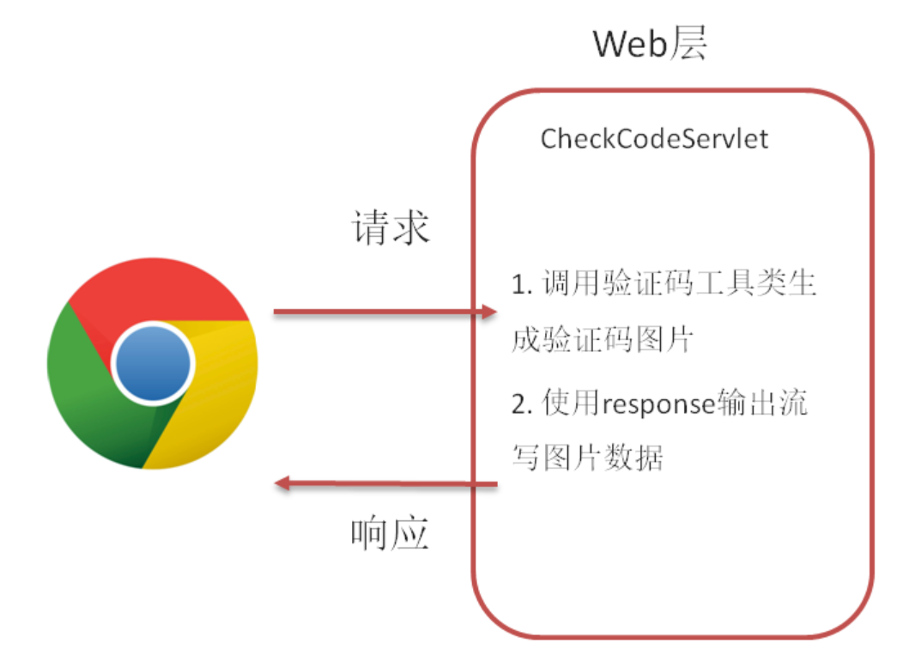测试类是通过OutputStream流将图片生成到磁盘，可以通过reponse对象的getOutputStream()字节输出流将图片响应给页面。
具体实现
（1）修改Register.jsp页面，将验证码图片从后台获取
1 | <td class="inputs"> |
（2）CheckCodeServlet用来接收请求生成验证码
1 | @WebServlet("/checkCodeServlet") |
- 校验二维码
判断生成的验证码和用户输入的验证码是否一样，如果不一样，则阻止注册。验证码图片访问和提交注册表单是两次请求，所以要将程序生成的验证码存入Session中。
实现流程分析
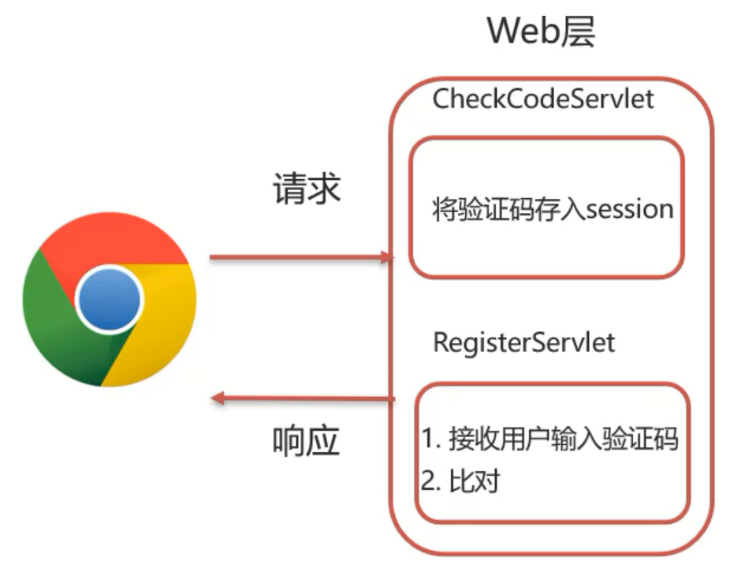（1）在CheckCodeServlet中生成验证码的时候，将验证码数据存入Session对象；
（2）前端将验证码和注册数据提交到后台，交给RegisterServlet类；
（3）RegisterServlet类接收到请求和数据后，其中就有验证码，和Session中的验证码进行对比；
（4）如果一致，则完成注册，如果不一致，则提示错误信息。
具体实现
（1）修改CheckCodeServlet类，将验证码存入Session对象
1 | // 将生成的验证码存入Session对象 |
（2）在RegisterServlet中，获取页面的和session对象中的验证码，进行对比
1 | // 获取用户输入的验证码 |